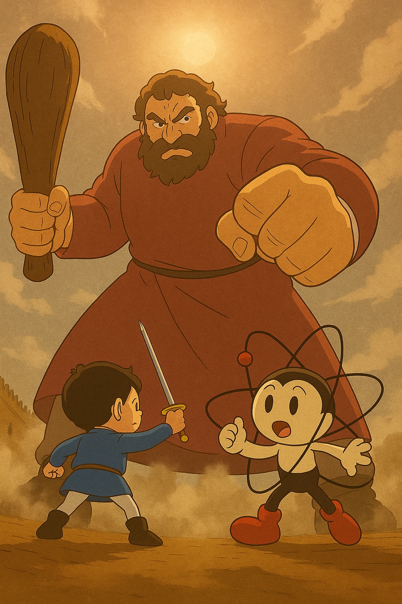

Model Evaluation Summary ┏━━━━━━━━━━━━━━━━━━━━━━━━━━━━━━━━━━━━━━━┳━━━━━━━━┳━━━━━━━━┳━━━━━━━━┳━━━━━━━━┳━━━━━━━━┳━━━━━━━━┳━━━━━━━━┳━━━━━━━━┓ ┃ Model ┃ Avg ┃ MIRAC ┃ MLQAR ┃ Massi ┃ Multi ┃ STS17 ┃ STS22 ┃ XNLI_ ┃ ┡━━━━━━━━━━━━━━━━━━━━━━━━━━━━━━━━━━━━━━━╇━━━━━━━━╇━━━━━━━━╇━━━━━━━━╇━━━━━━━━╇━━━━━━━━╇━━━━━━━━╇━━━━━━━━╇━━━━━━━━┩ │ arabic_triplet_matryoshka_v2 │ 0.6610 │ 0.6262 │ 0.5093 │ 0.5577 │ 0.5868 │ 0.8531 │ 0.6396 │ 0.8542 │ │ muffakir_embedding │ 0.6494 │ 0.6424 │ 0.5267 │ 0.5462 │ 0.5943 │ 0.8485 │ 0.6291 │ 0.7583 │ │ arabic_retrieval_v1.0 │ 0.6473 │ 0.6159 │ 0.5674 │ 0.5832 │ 0.5993 │ 0.8002 │ 0.6254 │ 0.7393 │ │ gate_arabert-v1 │ 0.6444 │ 0.5774 │ 0.4808 │ 0.5345 │ 0.5847 │ 0.8278 │ 0.6310 │ 0.8746 │ │ get_multilingual_base │ 0.6440 │ 0.7177 │ 0.5698 │ 0.5071 │ 0.5521 │ 0.7881 │ 0.6145 │ 0.7584 │ │ arabic_sts_matryoshka │ 0.6413 │ 0.5828 │ 0.4840 │ 0.5457 │ 0.5494 │ 0.8290 │ 0.6242 │ 0.8740 │ │ silma_ai_embedding_sts_v0.1 │ 0.6138 │ 0.3799 │ 0.5011 │ 0.5600 │ 0.5749 │ 0.8559 │ 0.6122 │ 0.8125 │ │ Arabic-MiniLM-L12-v2-all-nli-triplet │ 0.5431 │ 0.2240 │ 0.3612 │ 0.4775 │ 0.5698 │ 0.8111 │ 0.5540 │ 0.8043 │ │ paraphrase-multilingual-MiniLM-L12-v2 │ 0.5208 │ 0.2191 │ 0.3496 │ 0.4515 │ 0.5573 │ 0.7916 │ 0.4908 │ 0.7859 │ │ bojji │ 0.5177 │ 0.2941 │ 0.3989 │ 0.4667 │ 0.5433 │ 0.7233 │ 0.5880 │ 0.6094 │ │ zarra │ 0.4822 │ 0.2295 │ 0.3473 │ 0.4119 │ 0.5237 │ 0.6469 │ 0.6218 │ 0.5942 │ │ potion-multilingual-128M │ 0.4699 │ 0.1658 │ 0.3150 │ 0.4285 │ 0.5338 │ 0.6511 │ 0.5951 │ 0.5999 │ │ all_minilm_l6_v2 │ 0.2843 │ 0.0005 │ 0.0064 │ 0.1905 │ 0.4934 │ 0.5089 │ 0.2518 │ 0.5384 │ └───────────────────────────────────────┴────────┴────────┴────────┴────────┴────────┴────────┴────────┴────────┘
Bojji & Zarra Embedding models
blogging
embedding
minishlab
model2vec
arabic
Bojji and Zarra model2vec family model analysis and testing on Arabic Embeddings tasks.
Arabic Embedding Models
This blog post introduces the Bojji and Zarra family of static embedding models, designed for Arabic language tasks and built using the model2vec distillation technique from MinishLab.
These models distill knowledge from larger transformer models, such as SBERT, into compact, efficient embeddings.
This approach balances performance with speed and resource efficiency.
Below, I explore the Bojji models and their relationship to Potion models, their strengths and limitations, and their applications in Arabic embedding tasks.
What are Potion Models?
Potion models combine innovative techniques to create high-performing, compact static embeddings.
I liken them to Bojji from Ousama Ranking small in size but capable of competing with giants like Jina AI and BGE models.

Key features of Potion models include:
Superior Performance: They outperform traditional static embeddings like GloVe and FastText across various tasks, matching the performance of models like all-MiniLM-L6-v2 in English.
Compact Size: With approximately 2–4 million parameters, they are ~55 times smaller than GloVe, with model sizes ranging from 8 MB to 30 MB.
Efficiency: Designed for CPU execution and browser-based applications, they are ideal for edge devices and low-resource environments.
MTEB Performance: They achieve an average MTEB score above 50%, making them highly competitive for their size.
What is the model2vec Distillation Method?
The model2vec distillation method addresses the challenge of creating fast, compact sentence transformers.
It transforms large sentence transformer models into static embeddings that are up to 500x faster and 15x smaller, with only a minor performance trade-off.
Unlike traditional methods like GloVe, model2vec captures knowledge from large sentence transformers, producing uncontextualized word vectors.
While this sacrifices some contextual nuance, it offers significant advantages in:
Speed: Up to 500x faster inference.
Size: Models reduced by up to 50x, ranging from 8 MB to 30 MB.
Versatility: Sufficient word representations for most NLP applications.
For more details, refer to the MinishLab blog and GitHub repository.
Jina Embeddings v3 for Arabic
The jina-embeddings-v3 model is currently the top-performing open-source, zero-shot embedding model for Arabic on the MTEB leaderboard.
It excels across various tasks and has been validated in production for Arabic applications.
However, its large size and high memory requirements make it computationally expensive and slow compared to other embedding models.
To address this, I used model2vec to create a compact Arabic version, the Zarra and bojji with with another base model and different method, which retains strong performance while being significantly smaller and faster.
Bojji and Zarra
The Zarra models are the first static embedding models for Arabic trained with tokenlearn on the Arabic subset of the C4 dataset.
They are optimized for Arabic-specific tasks and come in multiple sizes:
All variants support float32 and int8 quantization without performance loss, making them highly efficient for resource-constrained environments.
Bojji Model vs Competitors
To evaluate Bojji’s performance, I compared it against several multilingual and Arabic-specific sentence transformer models using MTEB tasks tailored for Arabic.
I filtered the most related MTEB tasks that supports Arabic-script only the evalution script is in the references blow. We can say that the average score for the Zarra are very low compared to the other models, but didn’t let the Average score fool you! Average is affected with the outliers so, if one task is the low the final answer with be low also.
But from the first look, we can see the peformance is similar to the Arabic versions of MiniLM-L12 in Average and if you looked at the Sentence similarity for STS22 it’s score are very good compared to static-embedding model.
Understanding MTEB Tasks for Arabic
The Massive Text Embedding Benchmark (MTEB) evaluates embedding models across various tasks. Here’s a breakdown of the tasks used :
MIRACLRetrievalHardNegatives: Measures retrieval accuracy for hard negative examples, critical for search and question-answering systems. Zarra’s lower score here reflects its static embedding nature, which sacrifices some contextual nuance.
MLQARetrieval: Tests retrieval performance on multilingual question-answering datasets, where Zarra performs comparably to MiniLM models.
STS17 & STS22: Evaluates semantic textual similarity, where Zarra excels, particularly in STS22, with scores rivaling larger models.
XNLI: Assesses natural language inference, where Zarra’s performance is competitive despite its compact size.
These tasks highlight Zarra’s strengths in semantic similarity and efficiency, making it ideal for applications like chatbots and lightweight search systems
You can see the peformance for every task in MTEB here
Sorted by MIRACLRetrievalHardNegatives_main (Score) ┏━━━━━━━━━━━━━━━━━━━━━━━━━━━━━━━━━━━━━━━┳━━━━━━━━━━━━━━━━━━━━━━━━━━━━━━━━━━━┓ ┃ Model Name ┃ MIRACLRetrievalHardNegatives_main ┃ ┡━━━━━━━━━━━━━━━━━━━━━━━━━━━━━━━━━━━━━━━╇━━━━━━━━━━━━━━━━━━━━━━━━━━━━━━━━━━━┩ │ get_multilingual_base │ 0.718 │ ├───────────────────────────────────────┼───────────────────────────────────┤ │ muffakir_embedding │ 0.642 │ ├───────────────────────────────────────┼───────────────────────────────────┤ │ arabic_triplet_matryoshka_v2 │ 0.626 │ ├───────────────────────────────────────┼───────────────────────────────────┤ │ arabic_retrieval_v1.0 │ 0.616 │ ├───────────────────────────────────────┼───────────────────────────────────┤ │ arabic_sts_matryoshka │ 0.583 │ ├───────────────────────────────────────┼───────────────────────────────────┤ │ gate_arabert-v1 │ 0.577 │ ├───────────────────────────────────────┼───────────────────────────────────┤ │ silma_ai_embedding_sts_v0.1 │ 0.380 │ ├───────────────────────────────────────┼───────────────────────────────────┤ │ bojji │ 0.294 │ ├───────────────────────────────────────┼───────────────────────────────────┤ │ zarra │ 0.230 │ ├───────────────────────────────────────┼───────────────────────────────────┤ │ Arabic-MiniLM-L12-v2-all-nli-triplet │ 0.224 │ ├───────────────────────────────────────┼───────────────────────────────────┤ │ paraphrase-multilingual-MiniLM-L12-v2 │ 0.219 │ ├───────────────────────────────────────┼───────────────────────────────────┤ │ potion-multilingual-128M │ 0.166 │ ├───────────────────────────────────────┼───────────────────────────────────┤ │ all_minilm_l6_v2 │ 0.001 │ └───────────────────────────────────────┴───────────────────────────────────┘
Sorted by MLQARetrieval_main (Score) ┏━━━━━━━━━━━━━━━━━━━━━━━━━━━━━━━━━━━━━━━┳━━━━━━━━━━━━━━━━━━━━┓ ┃ Model Name ┃ MLQARetrieval_main ┃ ┡━━━━━━━━━━━━━━━━━━━━━━━━━━━━━━━━━━━━━━━╇━━━━━━━━━━━━━━━━━━━━┩ │ get_multilingual_base │ 0.570 │ ├───────────────────────────────────────┼────────────────────┤ │ arabic_retrieval_v1.0 │ 0.567 │ ├───────────────────────────────────────┼────────────────────┤ │ muffakir_embedding │ 0.527 │ ├───────────────────────────────────────┼────────────────────┤ │ arabic_triplet_matryoshka_v2 │ 0.509 │ ├───────────────────────────────────────┼────────────────────┤ │ silma_ai_embedding_sts_v0.1 │ 0.501 │ ├───────────────────────────────────────┼────────────────────┤ │ arabic_sts_matryoshka │ 0.484 │ ├───────────────────────────────────────┼────────────────────┤ │ gate_arabert-v1 │ 0.481 │ ├───────────────────────────────────────┼────────────────────┤ │ bojji │ 0.399 │ ├───────────────────────────────────────┼────────────────────┤ │ Arabic-MiniLM-L12-v2-all-nli-triplet │ 0.361 │ ├───────────────────────────────────────┼────────────────────┤ │ paraphrase-multilingual-MiniLM-L12-v2 │ 0.350 │ ├───────────────────────────────────────┼────────────────────┤ │ zarra │ 0.347 │ ├───────────────────────────────────────┼────────────────────┤ │ potion-multilingual-128M │ 0.315 │ ├───────────────────────────────────────┼────────────────────┤ │ all_minilm_l6_v2 │ 0.006 │ └───────────────────────────────────────┴────────────────────┘
Sorted by MassiveIntentClassification_main (Score) ┏━━━━━━━━━━━━━━━━━━━━━━━━━━━━━━━━━━━━━━━┳━━━━━━━━━━━━━━━━━━━━━━━━━━━━━━━━━━┓ ┃ Model Name ┃ MassiveIntentClassification_main ┃ ┡━━━━━━━━━━━━━━━━━━━━━━━━━━━━━━━━━━━━━━━╇━━━━━━━━━━━━━━━━━━━━━━━━━━━━━━━━━━┩ │ arabic_retrieval_v1.0 │ 0.583 │ ├───────────────────────────────────────┼──────────────────────────────────┤ │ silma_ai_embedding_sts_v0.1 │ 0.560 │ ├───────────────────────────────────────┼──────────────────────────────────┤ │ arabic_triplet_matryoshka_v2 │ 0.558 │ ├───────────────────────────────────────┼──────────────────────────────────┤ │ muffakir_embedding │ 0.546 │ ├───────────────────────────────────────┼──────────────────────────────────┤ │ arabic_sts_matryoshka │ 0.546 │ ├───────────────────────────────────────┼──────────────────────────────────┤ │ gate_arabert-v1 │ 0.534 │ ├───────────────────────────────────────┼──────────────────────────────────┤ │ get_multilingual_base │ 0.507 │ ├───────────────────────────────────────┼──────────────────────────────────┤ │ Arabic-MiniLM-L12-v2-all-nli-triplet │ 0.478 │ ├───────────────────────────────────────┼──────────────────────────────────┤ │ bojji │ 0.467 │ ├───────────────────────────────────────┼──────────────────────────────────┤ │ paraphrase-multilingual-MiniLM-L12-v2 �� 0.451 │ ├───────────────────────────────────────┼──────────────────────────────────┤ │ potion-multilingual-128M │ 0.428 │ ├───────────────────────────────────────┼──────────────────────────────────┤ │ zarra │ 0.412 │ ├───────────────────────────────────────┼──────────────────────────────────┤ │ all_minilm_l6_v2 │ 0.190 │ └───────────────────────────────────────┴──────────────────────────────────┘
Sorted by MultiHateClassification_main (Score) ┏━━━━━━━━━━━━━━━━━━━━━━━━━━━━━━━━━━━━━━━┳━━━━━━━━━━━━━━━━━━━━━━━━━━━━━━┓ ┃ Model Name ┃ MultiHateClassification_main ┃ ┡━━━━━━━━━━━━━━━━━━━━━━━━━━━━━━━━━━━━━━━╇━━━━━━━━━━━━━━━━━━━━━━━━━━━━━━┩ │ arabic_retrieval_v1.0 │ 0.599 │ ├───────────────────────────────────────┼──────────────────────────────┤ │ muffakir_embedding │ 0.594 │ ├───────────────────────────────────────┼──────────────────────────────┤ │ arabic_triplet_matryoshka_v2 │ 0.587 │ ├───────────────────────────────────────┼──────────────────────────────┤ │ gate_arabert-v1 │ 0.585 │ ├───────────────────────────────────────┼──────────────────────────────┤ │ silma_ai_embedding_sts_v0.1 │ 0.575 │ ├───────────────────────────────────────┼──────────────────────────────┤ │ Arabic-MiniLM-L12-v2-all-nli-triplet │ 0.570 │ ├───────────────────────────────────────┼──────────────────────────────┤ │ paraphrase-multilingual-MiniLM-L12-v2 │ 0.557 │ ├───────────────────────────────────────┼──────────────────────────────┤ │ get_multilingual_base │ 0.552 │ ├───────────────────────────────────────┼──────────────────────────────┤ │ arabic_sts_matryoshka │ 0.549 │ ├───────────────────────────────────────┼──────────────────────────────┤ │ bojji │ 0.543 │ ├───────────────────────────────────────┼──────────────────────────────┤ │ potion-multilingual-128M │ 0.534 │ ├───────────────────────────────────────┼──────────────────────────────┤ │ zarra │ 0.524 │ ├───────────────────────────────────────┼──────────────────────────────┤ │ all_minilm_l6_v2 │ 0.493 │ └───────────────────────────────────────┴──────────────────────────────┘
Sorted by STS17_main (Score) ┏━━━━━━━━━━━━━━━━━━━━━━━━━━━━━━━━━━━━━━━┳━━━━━━━━━━━━┓ ┃ Model Name ┃ STS17_main ┃ ┡━━━━━━━━━━━━━━━━━━━━━━━━━━━━━━━━━━━━━━━╇━━━━━━━━━━━━┩ │ silma_ai_embedding_sts_v0.1 │ 0.856 │ ├───────────────────────────────────────┼────────────┤ │ arabic_triplet_matryoshka_v2 │ 0.853 │ ├───────────────────────────────────────┼────────────┤ │ muffakir_embedding │ 0.849 │ ├───────────────────────────────────────┼────────────┤ │ arabic_sts_matryoshka │ 0.829 │ ├───────────────────────────────────────┼────────────┤ │ gate_arabert-v1 │ 0.828 │ ├───────────────────────────────────────┼────────────┤ │ Arabic-MiniLM-L12-v2-all-nli-triplet │ 0.811 │ ├───────────────────────────────────────┼────────────┤ │ arabic_retrieval_v1.0 │ 0.800 │ ├───────────────────────────────────────┼────────────┤ │ paraphrase-multilingual-MiniLM-L12-v2 │ 0.792 │ ├───────────────────────────────────────┼────────────┤ │ get_multilingual_base │ 0.788 │ ├───────────────────────────────────────┼────────────┤ │ bojji │ 0.723 │ ├───────────────────────────────────────┼────────────┤ │ potion-multilingual-128M │ 0.651 │ ├───────────────────────────────────────┼────────────┤ │ zarra │ 0.647 │ ├───────────────────────────────────────┼────────────┤ │ all_minilm_l6_v2 │ 0.509 │ └───────────────────────────────────────┴────────────┘
Sorted by STS22.v2_main (Score) ┏━━━━━━━━━━━━━━━━━━━━━━━━━━━━━━━━━━━━━━━┳━━━━━━━━━━━━━━━┓ ┃ Model Name ┃ STS22.v2_main ┃ ┡━━━━━━━━━━━━━━━━━━━━━━━━━━━━━━━━━━━━━━━╇━━━━━━━━━━━━━━━┩ │ arabic_triplet_matryoshka_v2 │ 0.640 │ ├───────────────────────────────────────┼───────────────┤ │ gate_arabert-v1 │ 0.631 │ ├───────────────────────────────────────┼───────────────┤ │ muffakir_embedding │ 0.629 │ ├───────────────────────────────────────┼───────────────┤ │ arabic_retrieval_v1.0 │ 0.625 │ ├───────────────────────────────────────┼───────────────┤ │ arabic_sts_matryoshka │ 0.624 │ ├───────────────────────────────────────┼───────────────┤ │ zarra │ 0.622 │ ├───────────────────────────────────────┼───────────────┤ │ get_multilingual_base │ 0.615 │ ├───────────────────────────────────────┼───────────────┤ │ silma_ai_embedding_sts_v0.1 │ 0.612 │ ├───────────────────────────────────────┼───────────────┤ │ potion-multilingual-128M │ 0.595 │ ├───────────────────────────────────────┼───────────────┤ │ bojji │ 0.588 │ ├───────────────────────────────────────┼───────────────┤ │ Arabic-MiniLM-L12-v2-all-nli-triplet │ 0.554 │ ├───────────────────────────────────────┼───────────────┤ │ paraphrase-multilingual-MiniLM-L12-v2 │ 0.491 │ ├───────────────────────────────────────┼───────────────┤ │ all_minilm_l6_v2 │ 0.252 │ └───────────────────────────────────────┴───────────────┘
Sorted by XNLI_main (Score) ┏━━━━━━━━━━━━━━━━━━━━━━━━━━━━━━━━━━━━━━━┳━━━━━━━━━━━┓ ┃ Model Name ┃ XNLI_main ┃ ┡━━━━━━━━━━━━━━━━━━━━━━━━━━━━━━━━━━━━━━━╇━━━━━━━━━━━┩ │ gate_arabert-v1 │ 0.875 │ ├───────────────────────────────────────┼───────────┤ │ arabic_sts_matryoshka │ 0.874 │ ├───────────────────────────────────────┼───────────┤ │ arabic_triplet_matryoshka_v2 │ 0.854 │ ├───────────────────────────────────────┼───────────┤ │ silma_ai_embedding_sts_v0.1 │ 0.813 │ ├───────────────────────────────────────┼───────────┤ │ Arabic-MiniLM-L12-v2-all-nli-triplet │ 0.804 │ ├───────────────────────────────────────┼───────────┤ │ paraphrase-multilingual-MiniLM-L12-v2 │ 0.786 │ ├───────────────────────────────────────┼───────────┤ │ get_multilingual_base │ 0.758 │ ├───────────────────────────────────────┼───────────┤ │ muffakir_embedding │ 0.758 │ ├───────────────────────────────────────┼───────────┤ │ arabic_retrieval_v1.0 │ 0.739 │ ├───────────────────────────────────────┼───────────┤ │ bojji │ 0.609 │ ├───────────────────────────────────────┼───────────┤ │ potion-multilingual-128M │ 0.600 │ ├───────────────────────────────────────┼───────────┤ │ zarra │ 0.594 │ ├───────────────────────────────────────┼───────────┤ │ all_minilm_l6_v2 │ 0.538 │ └───────────────────────────────────────┴───────────┘
Bojji vs. all-MiniLM
The Bojji model outperform the all-MiniLM family from SBERT in Arabic tasks while being significantly faster and capable of running on CPU.
This makes Bojji an excellent lightweight alternative for applications requiring efficient Arabic embeddings.
Also the models performance is most of the time better than the potion-multilingual-128M which indicates that techniques are working with any language not just English.
Arabic RAG Leaderboard
To complement MTEB evaluations, I tested Zarra on the Arabic-RAG Leaderboard, which provides a robust benchmark for Arabic-specific tasks. Zarra ranks 37 out of 45 models with an average score of 36.84.
This is impressive, as Zarra is the smallest model in the leaderboard, highlighting its efficiency and competitive performance in resource-constrained settings.
What about Bojji perfomrance in Arabic RAG Leaderboard?
Actually the first model with Zarra and not bojji is the second release of Zarra with different updates but..i know that if i didn’t write the blog as it as, i will not publish it again!
Bojji will be test on the Arabic Rag soon.
Speed comprsion
Some weights of the model checkpoint at Alibaba-NLP/gte-multilingual-base were not used when initializing NewModel: ['classifier.bias', 'classifier.weight']
- This IS expected if you are initializing NewModel from the checkpoint of a model trained on another task or with another architecture (e.g. initializing a BertForSequenceClassification model from a BertForPreTraining model).
- This IS NOT expected if you are initializing NewModel from the checkpoint of a model that you expect to be exactly identical (initializing a BertForSequenceClassification model from a BertForSequenceClassification model).Completed zarra on cpu: 26893.63 sentences/second
Completed bojji on cpu: 27478.15 sentences/second
Completed potion-multilingual-128M on cpu: 27145.31 sentences/second
Completed paraphrase-multilingual-MiniLM-L12-v2 on cuda: 2363.24 sentences/second
Completed silma_ai_embedding_sts_v0.1 on cuda: 627.13 sentences/second
Completed muffakir_embedding on cuda: 621.77 sentences/second
Completed get_multilingual_base on cuda: 895.41 sentences/second
Completed arabic_retrieval_v1.0 on cuda: 618.56 sentences/second
Completed arabic_triplet_matryoshka_v2 on cuda: 610.64 sentences/second
Model Benchmark Results ┏━━━━━━━━━━━━━━━━━━━━━━━━━━━━━━━━━━━━━━━┳━━━━━━━━━━━━━━━━━━━━━━━━━━┳━━━━━━━━┓ ┃ Model ┃ Speed (sentences/second) ┃ Device ┃ ┡━━━━━━━━━━━━━━━━━━━━━━━━━━━━━━━━━━━━━━━╇━━━━━━━━━━━━━━━━━━━━━━━━━━╇━━━━━━━━┩ │ zarra │ 26893.63 │ cpu │ │ bojji │ 27478.15 │ cpu │ │ potion-multilingual-128M │ 27145.31 │ cpu │ │ paraphrase-multilingual-MiniLM-L12-v2 │ 2363.24 │ cuda │ │ silma_ai_embedding_sts_v0.1 │ 627.13 │ cuda │ │ muffakir_embedding │ 621.77 │ cuda │ │ get_multilingual_base │ 895.41 │ cuda │ │ arabic_retrieval_v1.0 │ 618.56 │ cuda │ │ arabic_triplet_matryoshka_v2 │ 610.64 │ cuda │ └───────────────────────────────────────┴──────────────────────────┴────────┘
SafetensorsRepoMetadata(metadata=None, sharded=False, weight_map={'embeddings': 'model.safetensors'}, files_metadata={'model.safetensors': SafetensorsFileMetadata(metadata={}, tensors={'embeddings': TensorInfo(dtype='F32', shape=[249999, 256], data_offsets=(0, 255998976), parameter_count=63999744)}, parameter_count={'F32': 63999744})}, parameter_count={'F32': 63999744})Results saved to model_info_results.csv
Model Information Results ┏━━━━━━━━━━━━━━━━━━━━━━━━━━━━━━━━━━┳━━━━━━━━━━━━━━━━┳━━━━━━━━━━━┳━━━━━━━━━━━━━━━━━━━━━━━━━┳━━━━━━━━━━━━━━━━━━━━━━━┓ ┃ Model ┃ Parameters (M) ┃ Size (MB) ┃ Relative to Largest (%) ┃ Less than Largest (x) ┃ ┡━━━━━━━━━━━━━━━━━━━━━━━━━━━━━━━━━━╇━━━━━━━━━━━━━━━━╇━━━━━━━━━━━╇━━━━━━━━━━━━━━━━━━━━━━━━━╇━━━━━━━━━━━━━━━━━━━━━━━┩ │ zarra │ 64.00 │ 244.14 │ 41.92 │ 2.39 │ │ bojji │ 124.88 │ 476.40 │ 81.79 │ 1.22 │ │ potion-multilingual-128M │ 128.09 │ 488.63 │ 83.89 │ 1.19 │ │ paraphrase-multilingual-MiniLM-… │ 117.65 │ 448.82 │ 77.06 │ 1.30 │ │ silma_ai_embedding_sts_v0.1 │ 135.19 │ 515.72 │ 88.54 │ 1.13 │ │ muffakir_embedding │ 135.19 │ 515.72 │ 88.54 │ 1.13 │ │ arabic_retrieval_v1.0 │ 135.19 │ 515.73 │ 88.54 │ 1.13 │ │ arabic_triplet_matryoshka_v2 │ 135.19 │ 515.72 │ 88.54 │ 1.13 │ │ get_multilingual_base │ 305.37 │ 582.45 │ 100.00 │ 1.00 │ └──────────────────────────────────┴────────────────┴───────────┴─────────────────────────┴───────────────────────┘
It’s very clear the main advantage of the static embedding models here:
They can process large number of samples on cpu which make them very useful for : 1. Clustring 2. Build classification pipelines on top of them 3. Use them in edge-devices 4. base models for chunking algorithms and dudplications..more to come soon ! ❤️
What’s Next for Bojji?
It’s just the start with initial tests, there is more to explore from the base models, datasets and the new features from minishlab which will try to narrow the gab between model2vec and sentence-transformers.

Also thanks a lot for the minishlab team for their continous help to debug and update the models with me!